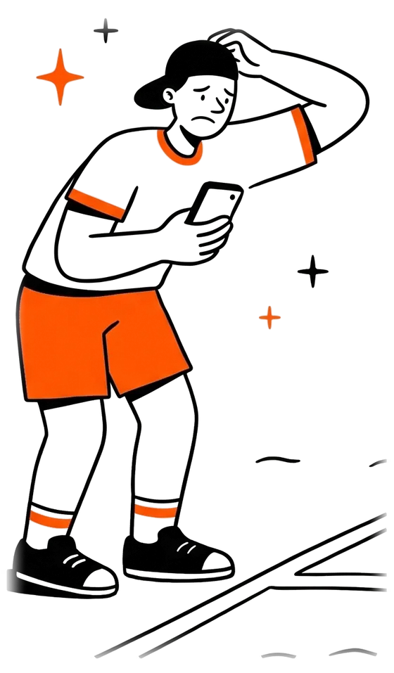

Erro 404
Essa página saiu da quadra.
O endereço pode estar errado ou a página mudou de lugar. Volte para o começo ou fale com a gente.

O endereço pode estar errado ou a página mudou de lugar. Volte para o começo ou fale com a gente.
